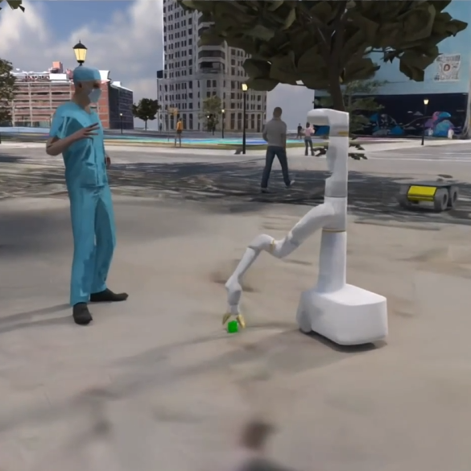
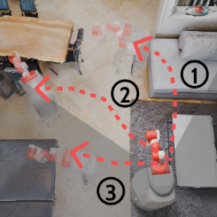
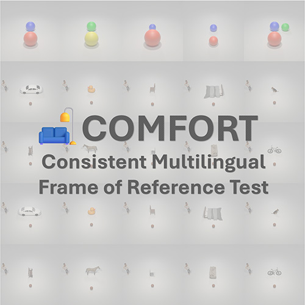
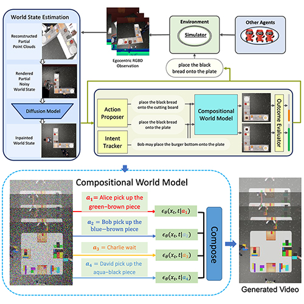
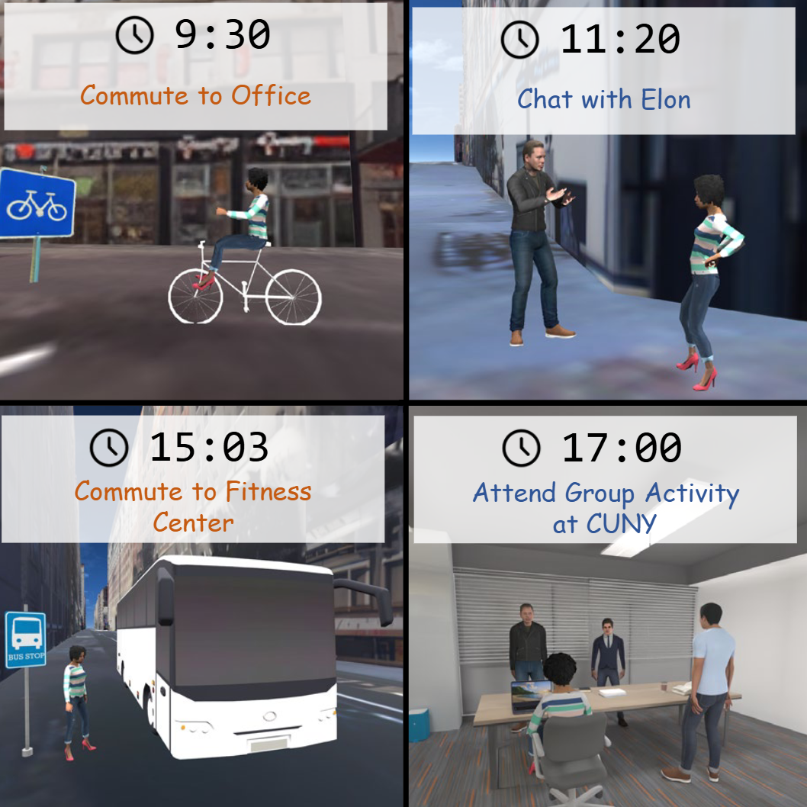

Zheyuan "Brian" Zhang
First-year Ph.D. student in Computer Science at Johns Hopkins University, advised by Prof. Tianmin Shu and Prof. Daniel Khashabi.
Previously M.S. in Robotics and Graduate Certificate in Cognitive Science at University of Michigan, advised by Prof. Joyce Chai; B.S. in Computer Science at UMass Amherst.
Research
I work at the intersection of artificial intelligence and cognitive science, with the goal of understanding how to make machines more human-like and how the brain works. My research focuses on Embodied AI and Continual Learning, alongside natural language processing, skill learning, world models, and representation learning, to develop scalable cognitive agents that can perceive, act, and learn continuously and sample-efficiently from experience in both physical and virtual environments. On the cognitive science side, I am particularly interested in developmental psychology, behavioral emergence, and consciousness.
News
- [2026.01]Virtual Community accepted to ICLR 2026.
- [2025.09]MindJourney accepted to NeurIPS 2025.
- [2025.01]COMFORT accepted to ICLR 2025 as Oral Presentation.
Selected Projects




